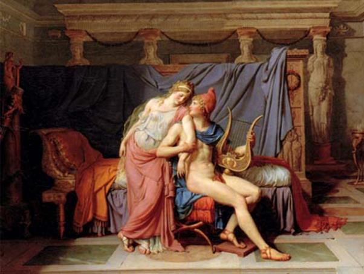

Nói về nàng Hélène, vào lúc mà Aphrodite hứa sẽ giúp cho Paris lấy được nàng Hélène làm vợ thì khi ấy Hélène đã là gái có chồng. Chồng nàng là Ménélas, vị vua của đô thành Sparte. Hélène về lai lịch vốn là con của thần Zeus và tiên nữ Léda. Cuộc tình duyên này như đã có dịp kể, là của thần thánh nên cũng có chuyện khác thường. Zeus để tránh sự theo dõi của Héra đã biến mình thành một con thiên nga hay con ngỗng gì đó, xuống ái ân với Léda. Léda sinh ra một quả trứng, và từ quả trứng này nở ra người anh hùng Pollux và nàng Hélène. Tất nhiên không ai coi Zeus là người chồng chính thức của Léda, và Zeus cũng không hề để tâm đến chuyện đó.
Người chồng chính thức của Léda, người chồng trần thế của nàng, là người anh hùng Tyndare. Đôi vợ chồng này sinh được một con trai tên gọi là Castor và một gái tên gọi là Clytemnestre. Như vậy kể cả con của Zeus thì nhà này có hai trai, hai gái. Ngay từ hồi còn là một thiếu nữ chưa chồng. Hélène đã nổi tiếng vì sắc đẹp tuyệt vời của mình. Tiếng lành đồn xa, tiếng dữ đồn xa, nhiều chàng trai nghe tên có người đẹp nức tiếng mà lại chưa gắn bó với ai, liền kéo nhau tới đô thành Sparte để xem mặt. Trăm người như một, nghìn người như một, đều phải thừa nhận rằng trên thế gian này người đẹp nơi nào cũng có, tuy không nhiều, nhưng chưa thấy nơi nào có người thiếu nữ nào đẹp bằng Hélène. Hélène đẹp đến nỗi mà có những chàng trai sau khi chứng kiến dung nhan của nàng về nhà sinh buồn bực vì nỗi không hiểu sao mình lại xấu đến thế. Sắc đẹp của Hélène đã gây ra cho nàng một tai họa. Người anh hùng Thésée ở Athènes đã bày mưu cùng với người bạn là Pirithoos ở đất Thessalie lặn lội xuống tận Sparte để bắt cóc nàng. May mắn làm sao, hai anh em Castor và Pollux đi tìm Hélène về được. Từ sau vụ tai biến đó, Tyndare giữ riết nàng ở cung điện. Nhưng đó chỉ là cách đối phó nhất thời. Điều chính yếu là phải mau mau chọn mặt gửi vàng, kén cho Hélène một người chồng. Tyndare bèn đánh tiếng. Thế là các anh hùng, dũng sĩ trên đất Hy Lạp kéo nhau về tụ hội ở Sparte. Không phải một, hai, ba, hay một chục, hai chục người mà là chín chục người, chín chục chàng trai muốn rắp ranh bắn sẻ. Chọn ai bây giờ?
Chọn ai trong những người này? Thật khó! Ai cũng tài ba lỗi lạc, ai cũng xứng đáng cả. Tyndare đến đau đầu vỡ óc, rối ruột rối gan về chuyện gả chồng cho con gái. Nếu như Tyndare quyết định một ai đó hay dùng cách rút thăm thì chắc chắn sẽ gây ra những phản ứng quyết liệt. Chưa biết đâu chuyện vui mừng mà lại hóa ra chuyện đau buồn đổ máu, gây ra kéo theo bao cừu hận đao binh. Trong lúc Tyndare đang rối trí như vậy thì may sao có một chàng trai đứng ra hiến cho ông một diệu kế. Đó là chàng Ulysse (còn có tên Odyssée) quê ở hòn đảo Ithaque nghèo nàn nhưng lại nổi danh là một con người khôn ngoan cơ trí. Ulysse khuyên Tyndare công bố cho các vị cầu hôn biết quyền lựa chọn hoàn toàn thuộc Hélène. Các vị cầu hôn phải đứng ra thề trước thần thánh sẽ tuân theo sự lựa chọn của Hélène. Nếu rủi ro xảy ra chuyện gì làm tan vỡ hạnh phúc mà Hélène đã lựa chọn hôm nay đây trước mặt mọi người, thì mọi người sẽ phải có trách nhiệm bảo vệ bằng được hạnh phúc đó, sự lựa chọn đó, bởi vì sự lựa chọn của Hélène hôm nay đây là thiêng liêng, là bất di bất dịch. Tyndare làm theo lời Ulysse. Các vị cầu hôn chấp nhận điều kiện. Họ lần lượt đứng ra long trọng tuyên thệ trước bàn thờ thần linh. Tiếp đến Hélène đứng ra chọn người bạn trăm năm. Thật hồi hộp! Chín mươi chín con tim của chín mươi chín chàng trai đập thình thịch như trống trận đổ dồn. Ai là người được cái diễm phúc chung sống với người đẹp? Hélène chọn... Ménélas. Phải, chính Ménélas, em ruột của Agamemnon, là chàng trai xứng đáng trong số những vị cầu hôn, bởi vì chàng trai vốn là dòng dõi của Pélops, Tantale và đấng phụ vương Zeus.
Ménélas cưới Hélène và sống luôn ở Sparte. Sau khi Tyndare qua đời, chàng thay người bố vợ trị vì đô thành Sparte. Cuộc sống của vợ chồng chàng thật yên ấm hạnh phúc. Chàng có ngờ đâu tới cái chuyện sắc đẹp của vợ chàng, nàng Hélène, lại có ngày gây ra cho chàng và con dân toàn đất nước Hy Lạp biết bao tai họa. Hai người sinh được một gái đầu lòng, đặt tên là Hermione, giống mẹ như đúc, giống cả từ câu nói đến tiếng cười, dáng đi dáng đứng.
Còn nữ thần Aphrodite, sau khi nhận được quả táo vàng, nữ thần bèn nghĩ đến việc hậu tạ lại chàng Paris. Nữ thần tới thành Troie bảo chàng đóng một con thuyền xinh đẹp để vượt biển khơi mù xám, sang đô thành Sparte, nơi nàng Hélène diễm lệ đang sống với chồng. Tuân theo lời nữ thần, Paris sắm sửa cho cuộc hành trình. Nàng Cassandre tiên báo cho vua cha biết những tai họa khôn lường do chuyến đi này của Paris, nhưng lúc này chẳng lời tiên đoán nào cản nổi chàng. Đến ngày nhổ neo, Cassandre ra tận bờ biển, cố sức bằng những lời tiên đoán của mình ngăn cản cuộc hành trình của Paris. Nàng gào thét. Nàng nói lên những dự cảm đen tối về tương lai của thành Ilion thần thánh: quân địch tràn vào thành, xác chết ngập đường, nhân dân trong đô thành bị bắt làm nô lệ giải đi, đâu đâu cũng tràn ngập máu lửa... Nhưng chẳng ai thèm để lọt tai những lời tiên báo sáng suốt ấy.
Cùng vượt biển sang Hy Lạp với Paris có Énée, một người em họ của Paris. Thuyền cập bến Évros. Hai chàng trai của thành Troie cùng với tùy tòng lên bờ đi vào đô thành Sparte. Được các vị khách quý từ tận phương Đông tới thăm, Ménélas rất vui mừng. Chàng mở tiệc trọng thể chiêu đãi những vị khách mà theo quan niệm của người Hy Lạp cổ xưa là do thần Zeus đưa đến. Được một hai hôm gì đó thì Ménélas nhận được tin sét đánh ngang tai: ông nội chàng ở đảo Crète qua đời, chàng phải về ngay để lo việc tang ma cho người ông yêu quý213. Trước khi cáo biệt những vị khách, chàng không quên dặn lại vợ ở nhà phải tiếp đãi khách cho chu đáo, ân cần. Tai hại thay lòng tin cẩn của chàng! Thế là chàng đã giao người vợ có sắc đẹp nghiêng nước nghiêng thành vào tay chàng công tử xứ Phrygie.
Được nữ thần Aphrodite giúp đỡ, Paris đã bằng tất cả tài năng và sự hấp dẫn của mình, tán tỉnh quyến rũ được Hélène. Người xưa kể rằng nữ thần Aphrodite đã cho Paris mượn chiếc thắt lưng của mình, chiếc thắt lưng kỳ diệu mà hễ ai mang nó trong người thì có thể cảm hóa chinh phục được trái tim người mình yêu một cách không đến nỗi khó khăn, vất vả gì nhiều lắm. Nghe theo lời dụ dỗ của Paris, Hélène thu thập tất cả đồ tế nhuyễn của tư trang xuống thuyền theo Paris sang thành Troie. Nàng đã yêu Paris đắm say đến nỗi có thể vứt bỏ hết cả, quên hết cả để đi theo chàng. Ngay đến đứa con gái yêu dấu Hermione lúc đó mới mười tuổi gào khóc đòi đi theo mẹ cũng bị mẹ bỏ lại.

Nàng Hélène bị Paris quyến rũ
Con thuyền của Paris giương buồm thẳng tiến về thành Troie. Khi ra khỏi vùng biển Hy Lạp thì bỗng nhiên con thuyền dừng lại. Thì ra vị thần Biển già đầu bạc Nérée từ đáy sâu dội nước hiện lên chặn đứng con thuyền lại. Thần tiên báo cho Paris biết, chàng sẽ bị chết trong cuộc giao tranh với người Hy Lạp, và thành Troie sẽ bị sụp đổ, bị triệt hạ trong một cuộc xung đột kéo dài với người Hy Lạp. Paris và Hélène vô cùng lo lắng. Nhưng nữ thần Aphrodite đã làm cho hai người yên tâm. Nữ thần còn bảo hộ cho con thuyền vượt biển được an toàn. Ba ngày sau, Paris và Hélène đặt chân lên đô thành Troie hùng vĩ, vàng bạc đầy kho.
Hành động xấu xa, vi phạm truyền thống đạo đức quý người trọng khách của Paris đã làm cho các vị thần nổi giận. Các vị thần liền họp và ra quyết định, phái ngay nữ thần Cầu vồng-Iris bay ngay xuống đảo Crète báo tin cho Ménélas biết. Lập tức Ménélas trở về Sparte ngay. Bước chân vào nhà vắng ngắt, chàng chẳng những mất Hélène xinh đẹp, yêu quý mà còn mất tất cả châu báu, vàng bạc. Uất hận vô cùng, chàng đến gặp người anh ruột là Agamemnon trị vì ở đô thành Mycènes giàu có để bàn cách trả thù. Agamemnon khuyên em, nên kêu gọi các vị anh hùng Hy Lạp giúp sức, những vị anh hùng đã từng cam kết trong lễ cầu hôn Hélène bằng một lời thề nguyền trịnh trọng rằng họ sẽ bảo vệ hạnh phúc cho cuộc hôn nhân do Hélène quyết định. Sau đó Agamemnon và Ménélas đến bày tỏ ý định với ông già Nestor, một người nổi tiếng về sự mực thước và khôn ngoan. Ông đã từng khuyên bảo, giúp đỡ các vị vua bằng những ý kiến sâu sắc, hợp tình hợp lý vì thế danh tiếng ông vang lừng khắp bốn cõi và vị vua Hy Lạp nào cũng sẵn sàng nghe theo lời khuyên nhủ của ông. Nghe chuyện của Ménélas xong, lão ông Nestor quyết định sẽ đem theo đạo quân của mình sang đánh thành Troie cùng với Ménélas. Ông còn cho cả những đứa con trai yêu quý tham dự vào cuộc viễn chinh này. Quý hóa hơn nữa, ông còn đích thân đứng ra đi kêu gọi các anh hùng Hy Lạp để họ cùng hội binh tham chiến. Nghe theo lời kêu gọi của Ménélas và Nestor, các tướng lĩnh Hy Lạp liền sắm sửa chiến thuyền, chiêu mộ binh sĩ để chuẩn bị cho cuộc viễn chinh. Agamemnon cũng phái sứ giả đi các vương triều, thành quốc để loan báo cái hành động hỗn xược, xúc phạm đến người Hy Lạp của Paris cho các vị vua biết. Nơi này truyền báo cho nơi khác cứ thế chẳng bao lâu toàn đất nước Hy Lạp đã biết rõ câu chuyện Paris lừa đảo, cướp đoạt mất Hélène và nhiều vàng bạc châu báu của Ménélas. Toàn đất nước Hy Lạp rậm rịch chuẩn bị cuộc viễn chinh.
213 Có lẽ chi tiết này không đúng, bởi vì ông nội Ménélas là Pélops, sinh cơ lập nghiệp trên đất Pise chứ không phải ở đảo Crète. Một nguồn chuyện khác kể có lẽ hợp lý hơn: Ménélas phải về ngay Crète để tham dự một lễ hiến tế trọng thể.